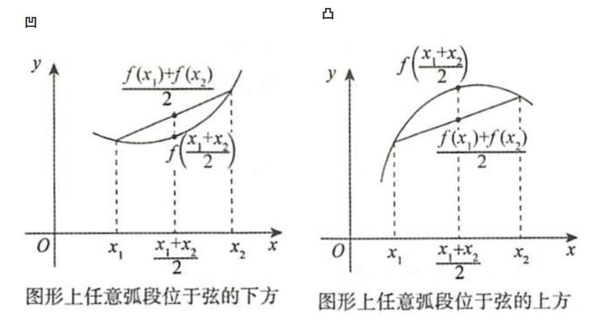
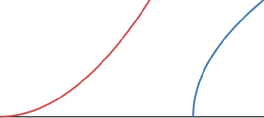

导数研究函数
性态
单调性
y=f(x),[a,b]连续,(a,b)可导
(a,b)内,f′(x)≥(≤)0,等号在有限点成立⇒f(x)在[a,b]单调增(减)
凹凸性
定义
f(x)在I连续,对∀x1,x2,f(x)在I是凹(凸)的⟺f(2x1+x2)<2f(x1)+f(x2)(>)
这个定义就是称曲线在割线下方为凹，反之为凸，刻画曲线选点既可以选中点也可以选任意点
⟺λ1,λ2∈(0,1),λ1+λ2=1
f(λ1x1+λ2x2)<λ1f(x1)+λ2f(x2)(>)

判别条件
满足可导条件,f的凹(凸)⟺f′的单调增(减)
f(x)在I上2阶可导,∀x∈I,f′′(x)≥(≤0)0⇒凹(凸),等号在有限点成立
直观上f′>0,x↗,f↗的情形,若f′′>0,曲线加速上凹,若f′′<0,曲线减速下凸

等价定义

分界点
极值点
定义
f(x)的极大(小)值点x0:∃x0邻域,对∀邻域内点x,f(x0)≥(≤)f(x)
⇒
极值点x=x0处若可导,f′(x0)=0
极值点是改变单调性的临界状态，故可导时为导数正负号的变化点0
易推广得,多元函数极值点的各偏导数为0
⇐
1
f(x)在x=x0连续,在x0去心邻域可导
x∈(x0−δ,x0),f′(x)≥(≤)0,x∈(x0,x0+δ),f′(x)≤(≥)0⇒f(x)在x=x0取极大(小)值
2
f(x)在x=x0,2阶可导,f′(x0)=0,f′′(x0)=0
f′′(x0)<(>)0⇒f(x)在x=x0取极大(小)值
f′′<0时曲线为凸取极大值,f′′>0时曲线为凹取极小值
3
n为偶数,f(x)在x=x0,n阶可导,f′(x0)=...=fn−1(x0)=0,fn(x0)=0
fn(x0)<(>)0⇒f(x)在x=x0取极大(小)值
拐点
定义
拐点:连续曲线的凹弧与凸弧的分界点
在满足可导要求的情况下,f的拐点⟺f′的极值点
研究x=x0在f的拐点性质或判别f的拐点→研究x=x0在f′的极值点性质或判别f′的极值点,判别f拐点时不用区分f′极大/小值
推论
f在x=x0可导,若x=x0是f的拐点,x=x0是f′的极值点
若x=x0是f的极值点⇒f′(x0)=0,则f′在x=x0邻域不变号,与x=x0是f的拐点矛盾
⇒可导点不同时为极值点和拐点
多项式
判断多项式函数某点性态时，考虑到根据方程根易插出多项式增减趋势而不易看出凹凸趋势
不妨直接画图判断多项式极值，先求导后画图寻找导函数极值判断多项式凹凸性
最值
驻点(导数零点)，不可导点，端点(极限)比较大小